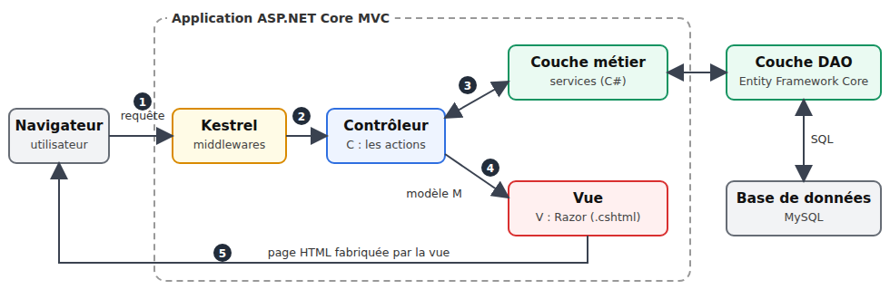

1. Introduction
Le PDF du document est |ICI|.
Les codes du document sont |ICI|.
Ce document est un produit de l'IA Claude d'Anthropic. Il fait suite au document Introduction pas à pas au framework web [NestJS] (2026), qui transposait lui-même le document Introduction à ASP.NET MVC par l'exemple (2013) au framework [NestJS]. Le présent document fait le chemin inverse et revient à la plate-forme [.NET], dans sa version actuelle :
- le framework [NestJS] et le langage [TypeScript] sont remplacés par le framework [ASP.NET Core MVC] et le langage [C#] ;
- les vues [Handlebars] sont remplacées par des vues [Razor] ;
- l'ORM [TypeORM] est remplacé par l'ORM [Entity Framework Core], toujours avec une base [MySQL].
Le document suit exactement la progression du cours [NestJS] : d'abord de nombreux petits projets, chacun centré sur une notion, puis une étude de cas complète, une application web de prise de rendez-vous pour un cabinet de médecins, dont tous les fichiers sont commentés. Les exemples portent les mêmes numéros et traitent les mêmes sujets que dans le cours [NestJS] : un lecteur qui connaît ce cours peut comparer les deux frameworks exemple par exemple. Ce n'est pourtant pas nécessaire : ce document se lit seul, et ne suppose aucune connaissance de [NestJS], ni d'ailleurs d'[ASP.NET]. On suppose seulement connues les bases de la programmation web (le protocole HTTP, le langage HTML) et celles du langage [C#].
1.1. La place d'ASP.NET Core MVC dans une application web
Une application web est souvent construite en couches, chaque couche ne parlant qu'à ses voisines :

- la couche web reçoit les requêtes HTTP du navigateur et lui renvoie des pages HTML. C'est elle que [ASP.NET Core MVC] nous aide à écrire ;
- la couche métier contient les règles de gestion de l'application (« un patient ne peut avoir qu'un rendez-vous à venir », par exemple). Elle ignore tout du web : elle pourrait aussi bien servir une application en ligne de commande ;
- la couche d'accès aux données (couche [DAO], pour [Data Access Object]) lit et écrit dans la base de données. Nous utiliserons l'ORM [Entity Framework Core] ([Object Relational Mapper]) qui fait correspondre les lignes des tables et des objets [C#].
La couche web suit elle-même le modèle [MVC] ([Model – View – Controller]) :
- le contrôleur (C) est une classe dont les méthodes, appelées actions, traitent chacune un type de requête (par exemple [GET /agenda]). Une action lit les paramètres de la requête, fait travailler la couche métier, puis choisit la vue à afficher ;
- le modèle (M) est l'ensemble des données que l'action transmet à la vue : un objet [C#] ;
- la vue (V) est un fichier [Razor] (extension [.cshtml]) : du HTML dans lequel des expressions [C#], introduites par le caractère [@], sont remplacées par les données du modèle.
Le traitement d'une requête suit les étapes numérotées du schéma :
- 1 : le navigateur envoie une requête HTTP, par exemple [GET /agenda?idMedecin=1&jour=2026-09-24] ;
- 2 : le serveur web [Kestrel], intégré à [ASP.NET Core], reçoit la requête. Elle traverse une suite de middlewares (lecture des cookies, authentification, fichiers statiques...), puis [ASP.NET Core] choisit l'action chargée de cette requête : c'est le routage. Avant d'arriver à l'action, la requête peut encore traverser des filtres, que nous découvrirons au fil des chapitres ;
- 3 : l'action demande à la couche métier les données dont elle a besoin ;
- 4 : elle construit le modèle de la vue et désigne la vue qui doit l'afficher ;
- 5 : le moteur de vues [Razor] fabrique la page HTML, qu'[ASP.NET Core] renvoie au navigateur.
[ASP.NET Core] est le framework web de la plate-forme [.NET] de Microsoft. Gratuit et libre, il fonctionne sous [Windows], [Linux] et [macOS]. Il sait fabriquer aussi bien des serveurs qui renvoient du JSON à un client [JavaScript] ([Angular], [React], [Flutter]...) que des applications web classiques, où c'est le serveur qui fabrique les pages HTML, le navigateur se contentant de les afficher. C'est ce second usage, la partie MVC du framework, qu'étudie ce document. Comme [NestJS], qui s'en est largement inspiré, [ASP.NET Core] repose sur deux idées : des attributs ([[HttpGet]], [[Route]], [[Authorize]]...) décrivent le rôle des classes et des méthodes, et l'injection de dépendances fournit à chaque objet ceux dont il a besoin.
1.2. Les outils utilisés
Les exemples ont été écrits et testés avec les outils suivants (leur installation est décrite en annexe) :
- le SDK [.NET] 10 ([Software Development Kit]), qui contient le compilateur [C#], le framework [ASP.NET Core] et l'outil en ligne de commande [dotnet]. [.NET] 10 est la version LTS (support à long terme) actuelle ;
- l'éditeur [Visual Studio Code], avec l'extension [C# Dev Kit] ;
- un navigateur récent ([Chrome], [Firefox], [Edge]) ;
- l'outil en ligne de commande [curl], qui affiche les réponses HTTP brutes (il est livré avec [Windows] 10 et 11) ;
- le SGBD [MySQL] (ou [MariaDB]), par exemple celui de [Laragon] sous [Windows], à partir du chapitre sur l'accès aux données, et pour l'étude de cas.
Le framework [ASP.NET Core] fait partie du SDK : les exemples n'ont besoin d'aucune bibliothèque supplémentaire jusqu'au chapitre 8. Les exemples 25 à 28 et l'étude de cas utilisent trois bibliothèques, téléchargées automatiquement depuis le site [nuget.org] lors de leur première compilation (il faut donc être connecté à Internet ce jour-là) : [Microsoft.AspNetCore.Authentication.JwtBearer] (jetons JWT), [BCrypt.Net-Next] (hachage des mots de passe) et [Pomelo.EntityFrameworkCore.MySql] ([Entity Framework Core] pour [MySQL]).
1.3. Exécuter l'étude de cas
Note du réviseur : je conseille au lecteur d’exécuter immédiatement l’étude de cas comme il est indiqué dans ce qui suit. Une fois bien compris le rôle de cette application de rendez-vous, demander à son IA favorite de modifier l’application dans le sens suivant : désormais chaque médecin pourra :
- fixer lui-même les créneaux de consultation entre deux dates. Cela lui permettra de modifier ses horaires selon ses besoins ;
- supprimer dans l’agenda d’un jour donné certains créneaux : indisponible pour raisons personnelles par exemple ;
La modification n’est pas simple parce qu’elle implique un changement de structure de la base de données. Demandez à l’IA de vous fournir le nouveau code de l’application et le script SQL pour créer la nouvelle base de données. Pour cela, vous aurez besoin de lui fournir le zip du projet complet ainsi que le script SQL de l’ancienne base de données.
Par ailleurs, je n’ai pas révisé le cours produit par Claude. Il avait déjà produit un cours [NestJS] parfait. J’ai supposé qu’il en était de même pour celui-ci. Si vous butez sur un obstacle de compréhension, la solution est toujours la même : demandez à votre IA favorite de vous expliquer ce que vous ne comprenez pas. Claude, par exemple, fait ça très bien. Vous aurez peut-être besoin de lui “uploader” l’exemple que vous ne comprenez pas.
Fin de note.
L'étude de cas qui termine ce document est une application complète. Le lecteur voudra sans doute la voir fonctionner avant d'entrer dans le détail du framework : voici comment l'exécuter. Elle se trouve dans le dossier [rdvmedecins2-aspnetcore-mvc], à côté du dossier [exemples] :
Il faut avoir installé le SDK [.NET] 10, [Visual Studio Code] et [MySQL] (cf. annexes). Puis :
- créer la base de données [dbrdvmedecins2], en exécutant le script [rdvmedecins2-aspnetcore-mvc/database/dbrdvmedecins2.sql]. Avec [Laragon], on ouvre l'outil [HeidiSQL] (bouton Base de données), puis on exécute le script par le menu Fichier / Exécuter un fichier SQL. En ligne de commande :
- vérifier la connexion à la base. L'application se connecte à [MySQL] sur [localhost], port 3306, avec l'utilisateur [root] sans mot de passe (les réglages par défaut de [Laragon]). Si votre compte [root] a un mot de passe, indiquez-le dans le fichier [appsettings.json] de l'application, à la fin de la chaîne de connexion [ConnectionStrings:RdvMedecins] ([...;User=root;Password=monMotDePasse;]). Avec [MariaDB], indiquez aussi sa version à la clé [MySql:ServerVersion] (par exemple [10.11.0-mariadb]) ;
- ouvrir le dossier [rdvmedecins2-aspnetcore-mvc] dans [Visual Studio Code] (menu Fichier / Ouvrir le dossier), puis un terminal (menu Terminal / Nouveau terminal) ;
- lancer l'application :
- à la première exécution, [dotnet] télécharge les bibliothèques depuis [nuget.org], compile l'application, puis la démarre. La console affiche alors l'adresse de l'application :
- ouvrir l'adresse [http://localhost:8081] dans un navigateur :

- se connecter avec l'un des comptes de démonstration, dont le mot de passe est le login : [admin] (administrateur), [pelissier], [tatou], [dupont] (médecins), [martin], [durand], [bistrou], [german] (patients). Il faut aussi recopier les caractères de l'image, en majuscules ou en minuscules.
Si l'application s'arrête aussitôt avec le message [Unable to connect to any of the specified MySQL hosts], c'est que [MySQL] n'est pas démarré ; avec [Access denied for user 'root'@'localhost'], que le mot de passe de la chaîne de connexion est incorrect ; avec [Unknown database 'dbrdvmedecins2'], que le script SQL n'a pas été exécuté. Le fichier [README.md] de l'application décrit d'autres cas. On arrête l'application par [Ctrl-C] dans le terminal.
Le dernier chapitre du document présente l'utilisation de l'application, puis commente chacun de ses fichiers.
1.4. Les exemples
Les exemples sont rangés dans le dossier [exemples], un sous-dossier par exemple :
Chaque exemple est un projet [.NET] indépendant, que l'on peut compiler et exécuter seul. Le fichier [exemples.slnx] est une solution : la liste de tous ces projets. Quand on ouvre le dossier [exemples] dans [Visual Studio Code], l'extension [C# Dev Kit] trouve la solution et charge tous les projets (volet Explorateur de solutions) : on bénéficie alors, dans chaque fichier, de la coloration syntaxique, de la complétion et du signalement des erreurs.
Le dossier [commun/bootstrap] contient le framework CSS [Bootstrap], partagé par les exemples qui mettent leurs pages en forme (à partir de l'exemple 15).
Chaque exemple a la structure d'un projet [ASP.NET Core MVC] :
- [Program.cs] : le point d'entrée de l'application : configuration, services, démarrage du serveur ;
- [Controllers] : les contrôleurs ;
- [Models] : les classes qui décrivent les modèles (des actions et des vues) ;
- [Views] : les vues [Razor] (à partir du chapitre 4) ;
- [appsettings.json] : la configuration de l'application (niveaux de journalisation, puis, plus loin, connexion à la base de données...) ;
- [Exemple13.csproj] : le fichier projet, qui décrit comment compiler l'application.
Pour exécuter un exemple, on ouvre un terminal sur son dossier (dans [Visual Studio Code] : clic droit sur le dossier de l'exemple, puis Ouvrir dans le terminal intégré) et on tape :
[dotnet run] compile le projet (dans son dossier [bin]), puis exécute l'application. Avec [dotnet watch], le code est recompilé et l'application relancée à chaque modification d'un fichier [.cs] ou [.cshtml] :
Tous les exemples écoutent sur le port 5000, le port par défaut d'[ASP.NET Core] : on ne peut en exécuter qu'un à la fois. On arrête le serveur par [Ctrl-C] dans le terminal. On peut aussi compiler tous les exemples d'un coup, depuis le dossier [exemples], pour vérifier que l'installation est complète :
Le fichier projet d'un exemple est réduit à une ligne. Par exemple [01-structure/Exemple01.csproj] :
- ligne 1 : [Microsoft.NET.Sdk.Web] est le SDK des applications web. Il apporte à lui seul tout le framework [ASP.NET Core] : contrôleurs, vues, configuration, serveur web...
Les réglages communs à tous les exemples sont écrits une seule fois, dans le fichier [exemples/Directory.Build.props], que la compilation lit automatiquement pour tout projet situé sous le dossier [exemples] :
Commentons ce fichier :
- ligne 9 : la version de [.NET] visée : [.NET] 10 ;
- ligne 11 : les types références « nullables ». Le compilateur distingue une variable de type [string], qui ne doit jamais valoir [null], d'une variable de type [string?], qui le peut, et signale par un avertissement tout risque d'erreur [NullReferenceException] ;
- ligne 13 : les espaces de noms les plus courants ([System], [System.Linq], [System.Threading.Tasks], [Microsoft.AspNetCore.Builder]...) sont importés automatiquement dans chaque fichier : pas besoin d'écrire les directives [using] correspondantes.
Enfin, le fichier [appsettings.json] est le même pour tous les exemples jusqu'au chapitre 8 :
- lignes 4-5 : les niveaux de journalisation. Les messages de l'application sont affichés à partir du niveau [Information] ; ceux d'[ASP.NET Core] lui-même, très nombreux, à partir du niveau [Warning] seulement. On verra ainsi dans la console les messages de démarrage et les erreurs, mais pas le détail de chaque requête ;
- ligne 8 : les noms de domaine acceptés dans les requêtes ([*] : tous).
1.5. Contenu du document
Le document progresse ainsi :
Chapitre | Contenu | Exemples |
Contrôleurs, actions, routage | du navigateur à l'action : routes, réponses, redirections, services | 01 à 06 |
Le modèle d'une action | les paramètres de la requête : liaison, conversion, validation, formulaires POST | 07 à 12 |
La vue et son modèle | Razor, gabarit, vues partielles, helpers, formulaires, validation, PRG | 13 à 21 |
Internationalisation | une application en français et en anglais | 22 |
Portées des données | application, requête, client | 23 |
Le cycle de vie d'une requête | middleware, filtres d'autorisation, d'action, d'exception, liaison de modèle | 24 |
Authentification et autorisation | JWT dans un cookie, rôles, captcha, limitation des tentatives | 25 à 27 |
Architecture en couches | web / métier / DAO avec Entity Framework Core et MySQL | 28 |
Étude de cas | l'application RdvMedecins, commentée fichier par fichier | - |
Chaque exemple introduit peu de nouveautés, et les chapitres s'appuient les uns sur les autres : il est préférable de les lire dans l'ordre. L'étude de cas, elle, réutilise toutes les notions des chapitres précédents : chaque fois que c'est utile, son commentaire renvoie à l'exemple où la notion a été présentée.